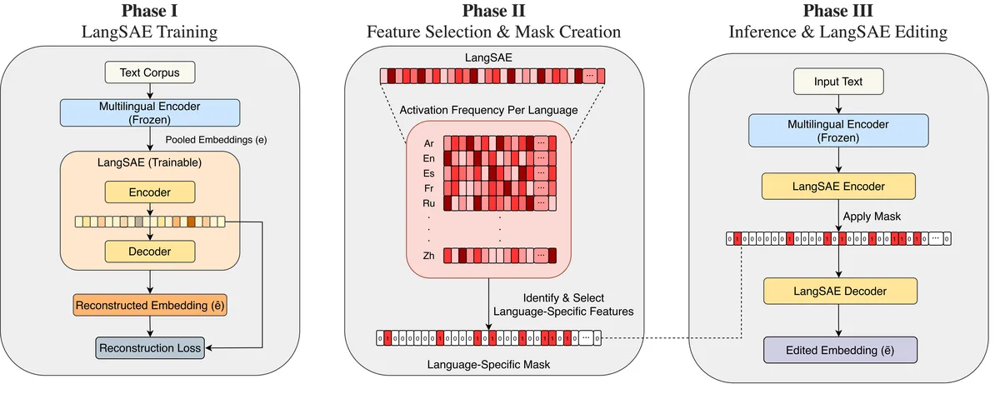

ACL 2026 · Main · Oral
LangSAE Editing: Improving Multilingual Information Retrieval via Post-hoc Language Identity Removal

Abstract
Multilingual retrieval systems face a persistent challenge: dense embeddings encode language signals that can overshadow relevant cross-language evidence. We introduce a sparse autoencoder approach that identifies language-associated latent units using cross-language activation statistics and removes these signals at inference time. The method preserves the original embedding dimensions and avoids retraining of base models or re-encoding of text. Across multiple languages, our post-hoc editing yields consistent retrieval improvements, with particularly strong gains for languages that use different writing systems.
At a Glance
- Background
- In multilingual retrieval, dense embeddings also encode language signals that can overshadow relevant cross-language evidence
- Problem
- Remove language signals at inference time to improve cross-language retrieval, without retraining the base model or re-encoding text
- Method
-
- Decompose embeddings into latent units with a sparse autoencoder
- Identify language-associated latent units via cross-language activation statistics
- Post-hoc editing removes those signals at inference while preserving the original embedding dimensions
- Results
-
- Consistent retrieval improvements across multiple languages
- Strongest gains across different writing systems
- Drops into existing systems with no retraining or re-encoding required
- Role
-
- First author: led the methodology and overall study design
- Implemented the SAE-based language-latent identification and removal pipeline
- Designed the multilingual retrieval experiments; led analysis and writing